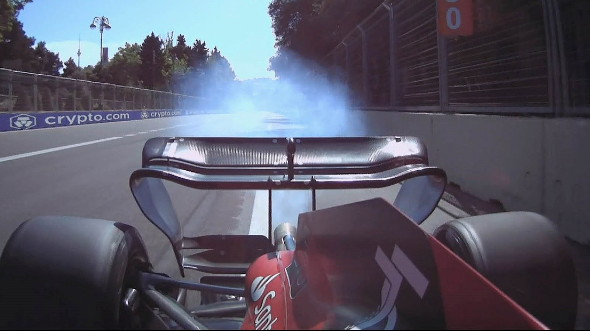

The season is officially coming to an end now with the Abu Dhabi Grand Prix. It's been a long season with ups and downs and the outcome couldn't have been foreseen at the start of it. While Ferrari started out as a dominating team with a powerful car, by the end of the season, Red Bull had already won the championship and by a good margin. The Scuderia found themselves fighting for second place in the championship after a tight battle with Mercedes in the second half of the season.
I'm taking a look into how the team and the car has evolved. What upgrades did Ferrari bring along the way and how their car performed during this season? At the same time, we're also finding out what the team's plans are for next season and how they are planning to develop the car for the 2023 season.
Bahrain Grand Prix
The season started out brilliantly for Scuderia Ferrari. They looked absolutely superior compared to the competition, only Red Bull being able to come a little bit close to their performance. In qualifying, the real fight was only between Ferrari and Red Bull Racing, with Charles Leclerc (Ferrari) taking pole position, Max Verstappen (Red Bull) on P2, followed by their teammates. As for the race, Charles was the one leading almost the whole grand prix, only making a switch with Carlos Sainz (his teammate) for a few laps. The battle with Verstappen was astonishing, but ended rapidly as his car broke down at the end. Therefore, Ferrari managed their first and only 1-2 of the season, with Charles Leclerc as the winner and Carlos Sainz on P2. But how did their car look at the start of the season? Why were they able to put on such a performance right from the start? The car was incredible with cornering speeds.
Mattia Binotto, the team principal, stated: "I am very happy with this result, as our race today shows how well this team has worked over the past two years in Maranello". This just goes to show how much work went into putting this car out on track, the F1-75, as it is called.
Technical specifications
Let's get into the technical specifications of this car: the suspension is a push rod type on the front and a pull rod on the rear. The engine is a direct injection V6 turbocharged engine of 1.6L (more on engines here). As all F1 cars, it contains a MGU-K and MGU-H. It has eight gears with one for reverse. The aerodynamics are pretty different compared to other teams, for example: Mercedes choosing a no side pod design, whereas Ferrari went for a scalloped-out section in them. The nose of the car seemed to be a bit narrower compared to the others. Main components weren't really changed. This is the car we started out with.
Photograph: Ferrari
Next few races
Such a strong car allowed the Scuderia to fight for both championships. Therefore, Leclerc was leading both championships after having been on the podium at all 3 races so far. In Italy a mistake meant only a 6th place and with Sainz not finishing the race. No upgrades were brought yet since the pre-season testing when the floor was changed. Miami was also a good race with both drivers on podium.
Spanish Grand Prix
While once again dominant at this track, with Leclerc on pole and also leading the race, another factor made its appearance into the equation: reliability. A thing that would become a nightmare for the rest of the season. Charles' race was ruined due to an engine failure, specifically a turbo and MGU-H (motor generator unit - heat) failure. Both components were left unusable, which caused Ferrari to replace them for Monaco. The teams are allowed to use only 3 of both pieces during the season and this was already Charles' 2nd.
However, Spain did bring the first significant upgrade package: a new floor and a new rear wing. The rear wing turned out to be more sharper and well defined, designed to help the air not to leak on the sides. It also brought a better DRS system, to help create less drag (the aerodynamic force that arises from the movement of an object through air - absorbs power from the engine). These upgrades had the purpose to reduce porpoising. Here’s a comparison between the wings:
Photograph: F1, The Race
Spain was the first race surrounded by heartbreak. Monaco had the performance of the car and brought a podium for Sainz, but due to other mistakes, Charles finished 4th.
Azerbaijan Grand Prix
This was a very disappointing race, even though both drivers qualified in the top 5. Reliability once again said its word, with both engines failing, leading to a double DNF (did not finish). Charles Leclerc’s engine blew up and Carlos suffered from a hydraulic problem. Mattia Binotto also admitted: “There is definitely still room for improvement on the reliability front”.
Canada meant another replacement for Charles’ engine causing him to take a penalty and start from the back of the grid. Overall, that was a good race for both drivers.
Silverstone
Bodywork upgrades were brought in Silverstone, mainly to help with the air flow around the car, but also a new engine cover. Some aerodynamic elements were also added to the mirrors for airflow. It was a significant grand prix because Carlos Sainz managed to snatch his first F1 win.
Photograph: Ferrari
Next few races
Austria was redemption for Charles, as he took his 3rd win of the season, however Ferrari faced a new engine failure on Carlos’ car, which caught on fire. France brought similar upgrades to Silverstone, however Charles crashed and Carlos finished 5th. Hungary was difficult, due to the conditions and overall pace of the car. Belgium was the first real race of the season when Red Bull were considerably superior. Ferrari obviously fell behind during the break, but no catch could really be made to bring the car back to the dominance that we saw at the start of the season. All races until Mexico brought podiums for the Scuderia, but Singapore was the moment all of the upgrades stopped.
Ferrari decided to stop developing the 2022 car, as both championships were almost lost. The power unit is frozen, which doesn’t allow any more changes to it until 2026. Verstappen won the drivers’ championship in Japan, while Red Bull won the constructors’ in Austin. Mercedes eventually caught up and put on a beautiful fight with Ferrari towards the season finale, even so this is nothing to be happy about for Ferrari, as they got from the most dominant car to fighting to even stay on the second place, losing out by a good margin to Red Bull. This season was not only the result of reliability issues, but also mistakes of all types. Everyone thought this would finally be the year in which Ferrari wins after 14 years, but it wasn’t the case.
Plans for the future?
Improving tyre degradation and reliability, as it was sacrifised for power, consequently Ferrari is playing a long term game. We won’t know for sure what the team is planning for 2023, as we’ll only find out in Bahrain next season, but we can guess. Rumours are that they might be going for a pull rod suspension on the front tyres, but also for a different side pod design, that’s more similar to Red Bull. These could be true, but also false, so only time will really tell. The engines were already tested on track with small changes for 2023.
The 2022 season was not what the fans and Ferrari wanted, even so we must not forget how much they’ve managed to recover to even be fighting at the top after finishing the 2021 season 3rd, 2020 season 6th. They are finally back at winning races and fighting for championships. Competitiveness was an extremely good thing to achieve in 2022, even without managing to win. We’re looking with hope to the future as Charles Leclerc and Carlos Sainz remain the Scuderia’s drivers.
Charles Leclerc said: “I am very impatient, I will do everything possible to be World Champion in 2023”
Carlos Sainz said: “We have another opportunity and I fully trust that the team will create another great car like this year's, and we will learn from the mistakes made this year”
It was definitely a long year and it’s crazy to already have it coming to an end. Despite not winning, Scuderia Ferrari did manage to finish second in both championships. I’m for sure looking forward to seeing their performance next year, especially since it’ll be getting closer with Mercedes also in the mix. I have to say congratulations to the team and both of their drivers.
I will be going deeper into how other cars performed in the 2022 season, so make sure to stay tuned. I’d usually say: “don’t forget to go racing”, but this was it. The season is officially over and the winter break is on. I’ll still be writing articles so make sure to keep an eye on my socials and this blog as well. Thank you F1 for another great season!